This is a live worked example of the "skillify everything" / company-brain pattern from other AI Engineer talks, applied solo and fast: a week of Slack brain-dumps turned into a personal site and a second demo tool in a single morning, w...
This traces the argument from her two guiding quotes through the one-prompt build pattern to the unreviewed demo output she read live; treat the highlights as illustrative, not verified (ours).
“2 days ago, I asked Opus 4.8, I wish it was Fable, but it was Opus 4.8 on Saturday to make a website that encapsulate all the thoughts that I had in the last week.”
said at 02:06“quote that says live in the future and then we'll build what's missing”
said at 05:14“computers are the bicycle of their minds and Gary always says that with Fable and these insanely capable models it's like a rocket mind like a rocket ship for the minds”
said at 05:14“this morning started at 10:00 a.m. at my favorite coffee shop in the marina uh with Opus 4.8 because Fable was not out at this point”
said at 08:51“naps naps were very popular among the best minds. Um they barely ate.”
said at 10:54“I asked it to create a voice on MD which um it picked up on all the writings that it could find on the internet that was written by me including my tweets and everything”
said at 07:49“easily readable by the agents and it's a lot more efficient than having the agent look at this page, obviously.”
said at 11:56The "Shape of Minds" highlights (naps, low food intake, childlessness among great thinkers) were read live from output generated about 20 minutes before the talk and were explicitly unreviewed by the speaker; treat them as an unverified demo output, not a vetted finding (ours).
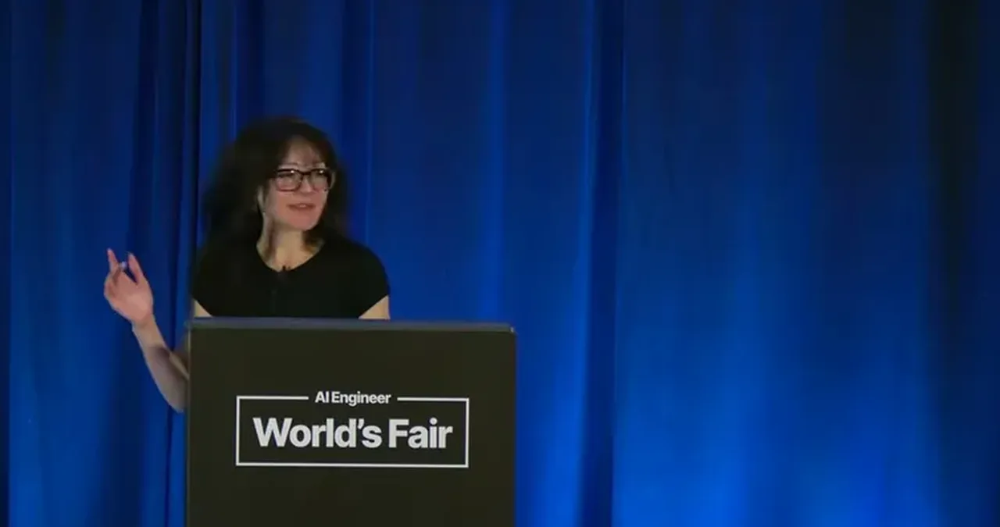
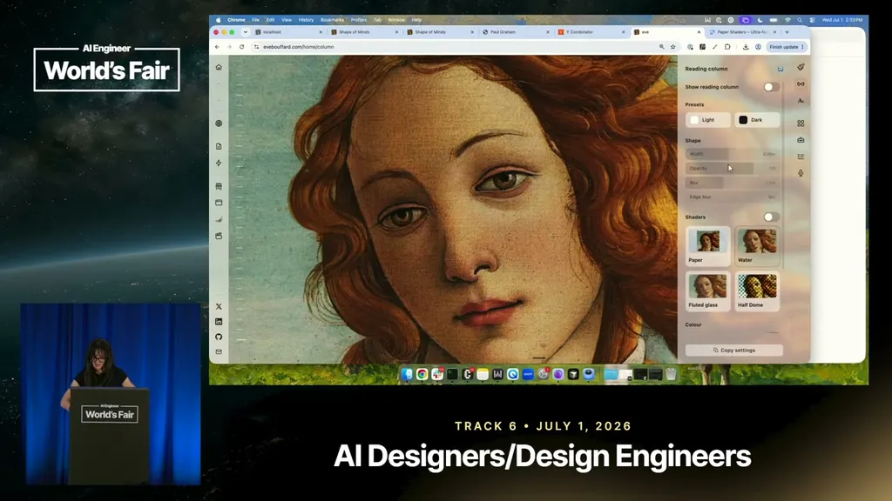
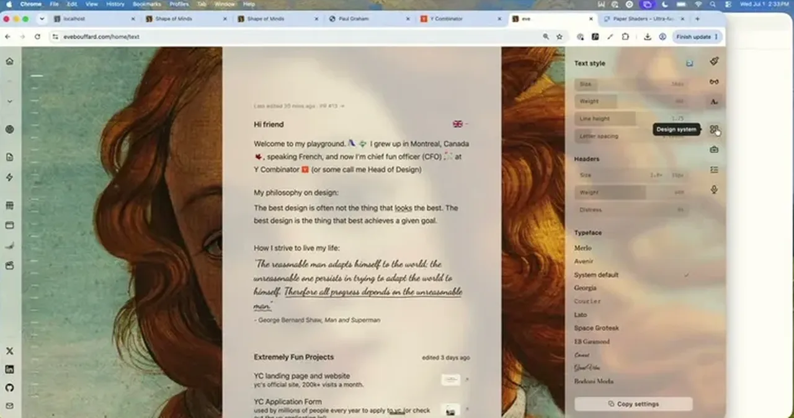
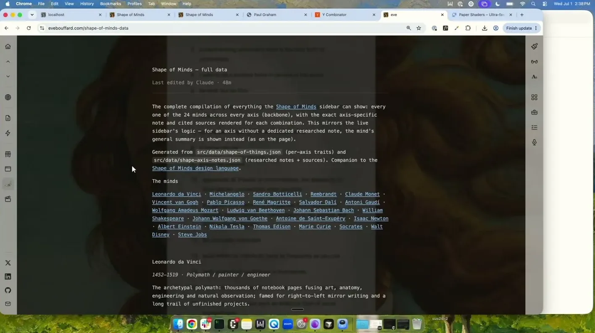
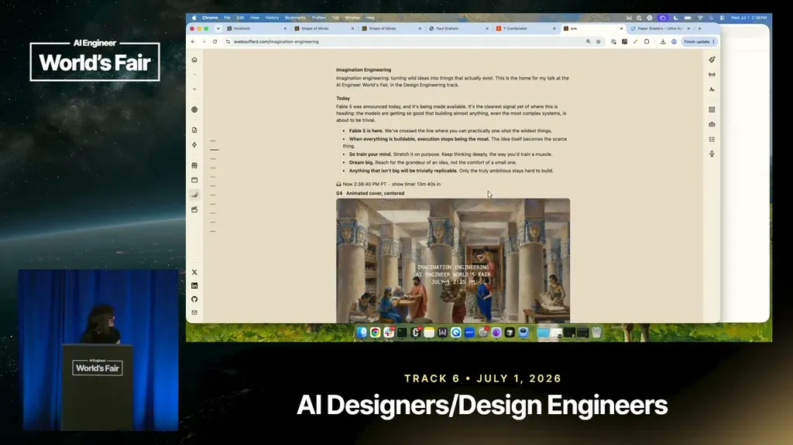
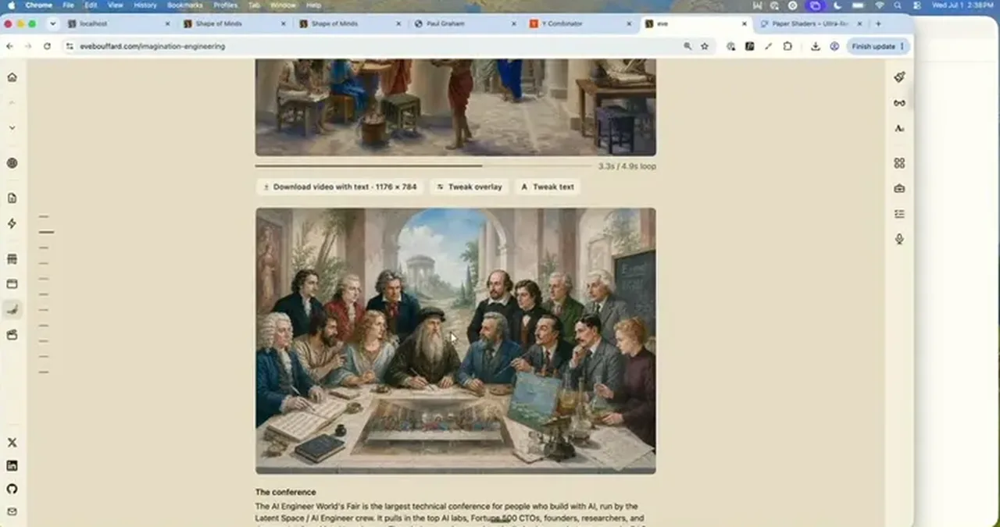
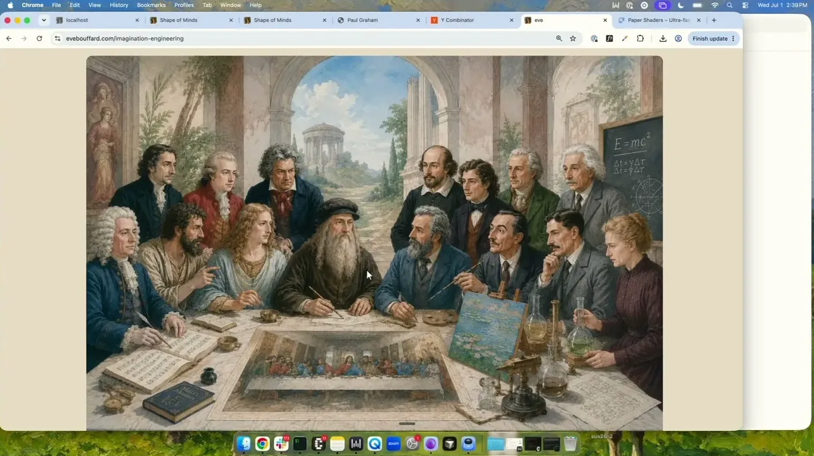
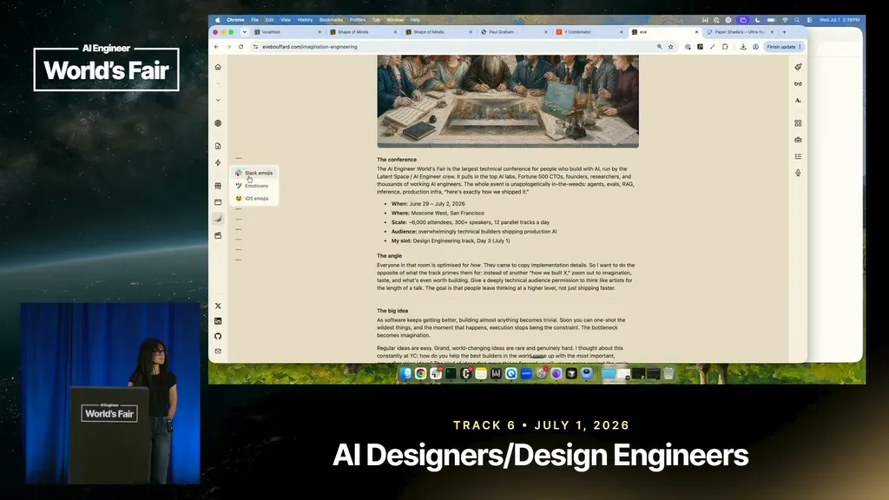
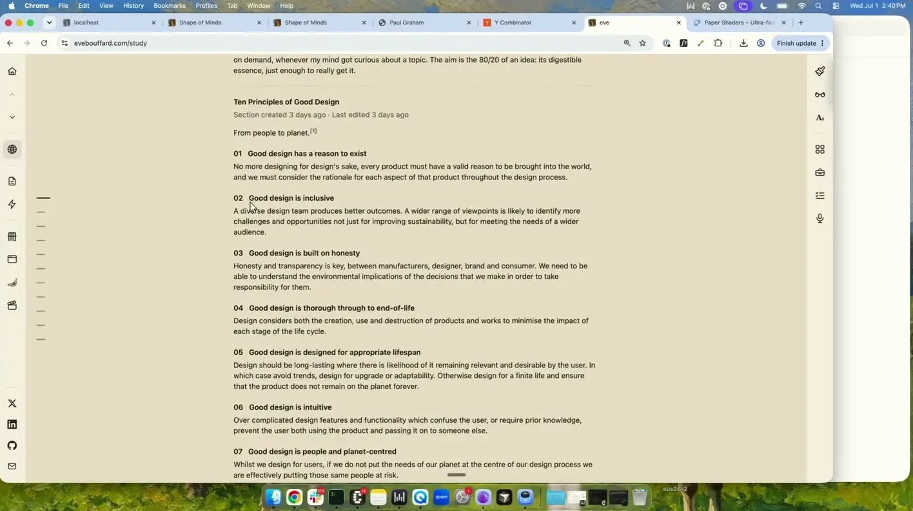
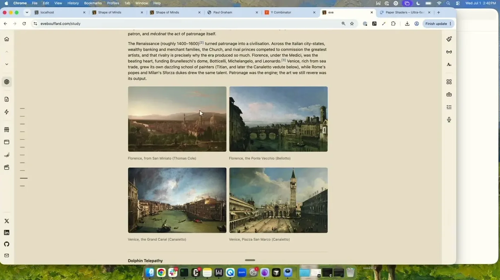
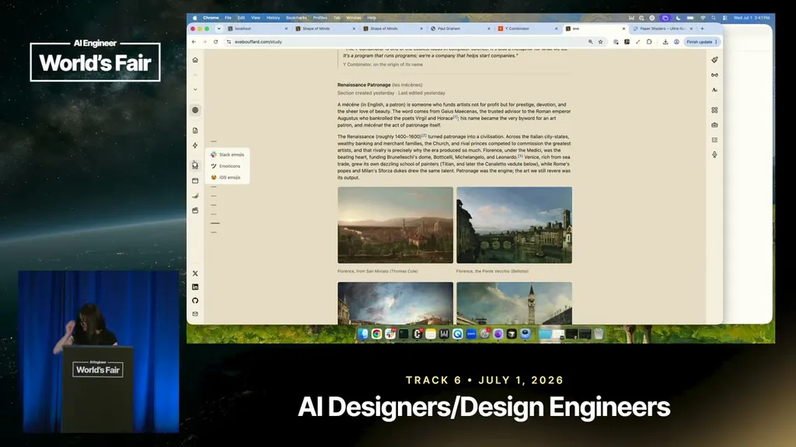
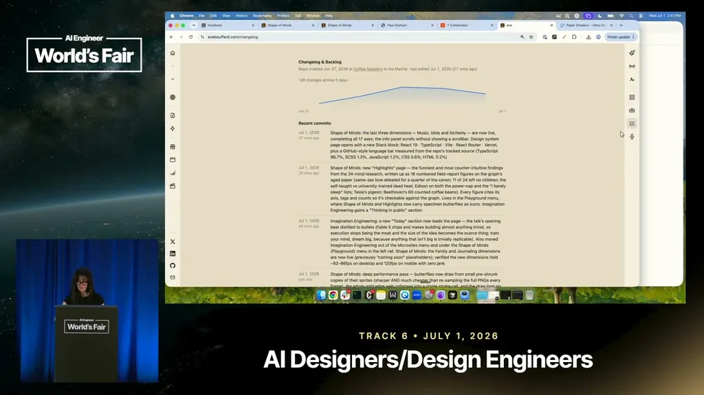
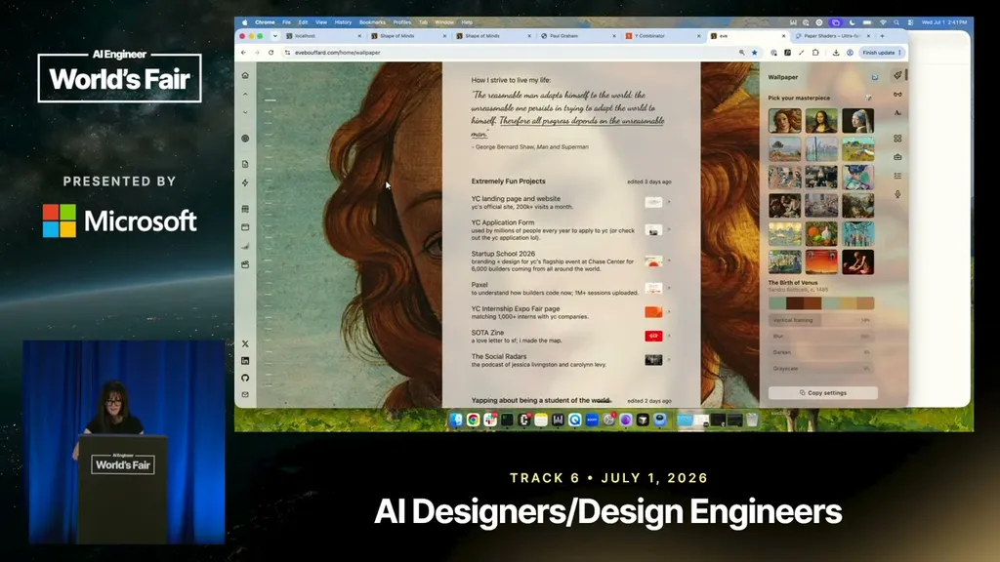
| Stance | Claim | t |
|---|---|---|
| asserts | A week of private Slack brain-dumps was turned into a full personal website with one prompt to Opus 4.8, two days before the talk. | 02:06 |
| asserts | She names a Paul Graham line as her favorite quote and organizing prompt for the talk. | 05:14 |
| asserts | She reframes the classic 'bicycle for the mind' metaphor as a 'rocket ship for the mind' given current model capability. | 05:14 |
| asserts | A second tool comparing historical figures was built from scratch that same morning in a single coffee-shop session. | 08:51 |
| asserts | A voice.md file distilled from her own online writing was generated to keep the site's tone consistent with her own. | 07:49 |
| asserts | The tool surfaced unreviewed claims about historical figures, including that naps were common and food intake was low among them. | 10:54 |
| recommends | A separate glossary.md file is more efficient for an agent to consume than having it parse the rendered web page. | 11:56 |
Machine-readable copy embedded in this page (script#ontology) and in the corpus ontology.